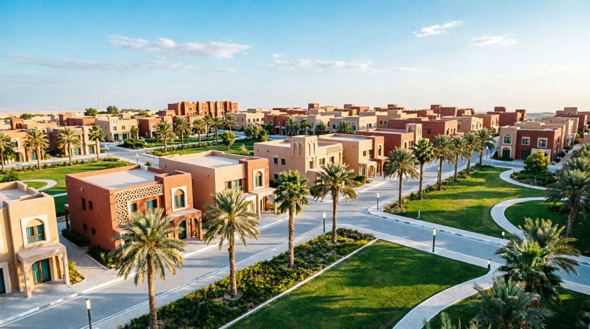
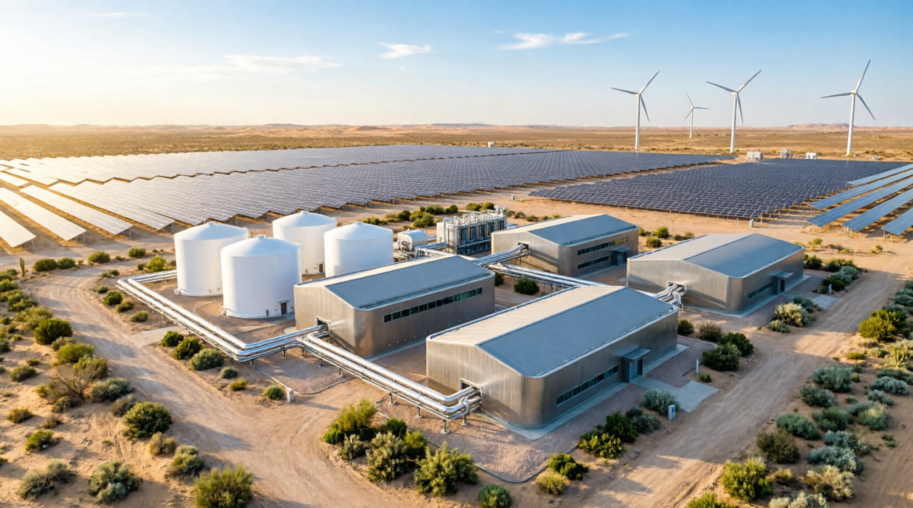
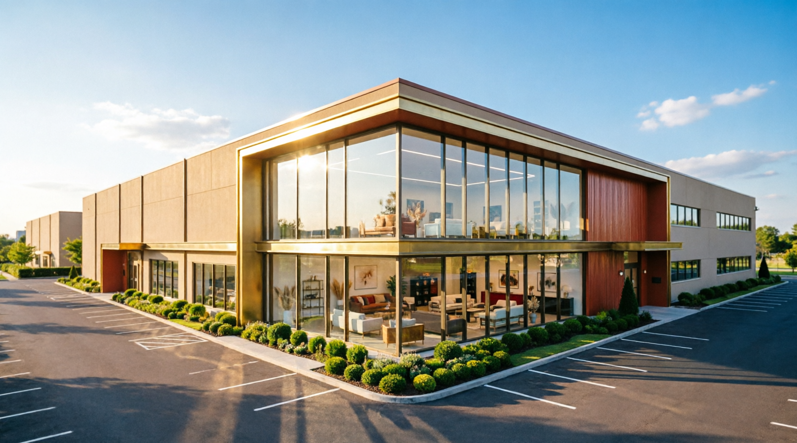
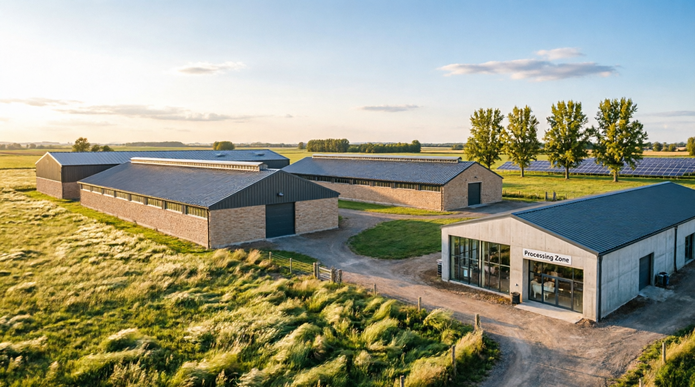
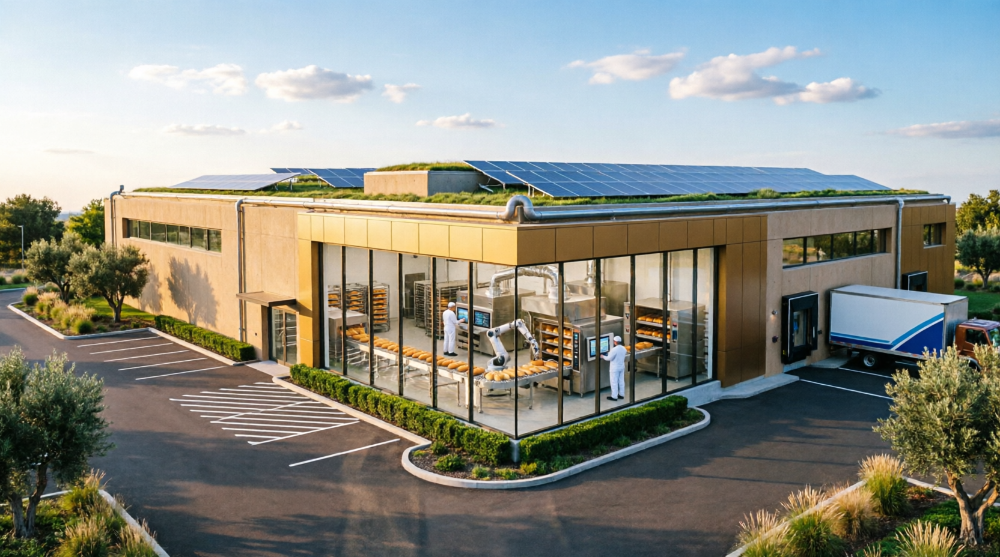

المهندس عبدالكريم السيد – خبرة 39 عاماً في إدارة المشاريع الكبرى
دراسات جدوى، تخطيط استراتيجي، وتصميم مشاريع تنموية شاملة لدعم إعادة إعمار سوريا.

مشروع استثماري ضخم يشمل تخطيط مناطق سكنية جديدة، تطوير بنية تحتية حديثة، إنتاج مواد متطورة للبناء، وإعداد نماذج استثمارية لجذب رؤوس الأموال.
سوريا · شامل استثمار ضخم
دراسة متكاملة لإنتاج الهيدروجين الأخضر، تحويل سوريا إلى مركز إقليمي للطاقة النظيفة. يشمل أنظمة الإنتاج، التخزين، وتزويد الشبكة.
سوريا طاقة متجددة
مصنع متخصص في إنتاج الفرش ومواد الديكور والتجهيزات الفندقية بمعايير عالمية. يشمل دراسة خطوط الإنتاج، تحليل المنافسين، وتقييم فرص التصدير.
تركيا · سوريا صناعي
دراسة جدوى لتطوير استثمار الثروة الحيوانية، تشمل تحليل سلالات الأغنام، دراسة تكاليف التربية، وتقييم الأسواق المحلية والخارجية.
تركيا · سوريا زراعي · حيواني
دراسة جدوى لإنشاء سلسلة مخابز آلية متكاملة، تشمل تحديد خطوط الإنتاج، دراسة التكاليف التشغيلية، وتقييم الجدوى الاقتصادية.
سوريا غذائيقيادة النهضة الاقتصادية الشاملة وإعادة الإعمار الاستراتيجي في سوريا عبر مشاريع مستدامة تحقق التنمية الاقتصادية والاجتماعية والبيئية.
مؤسس المبادرة | إسطنبول، تركيا